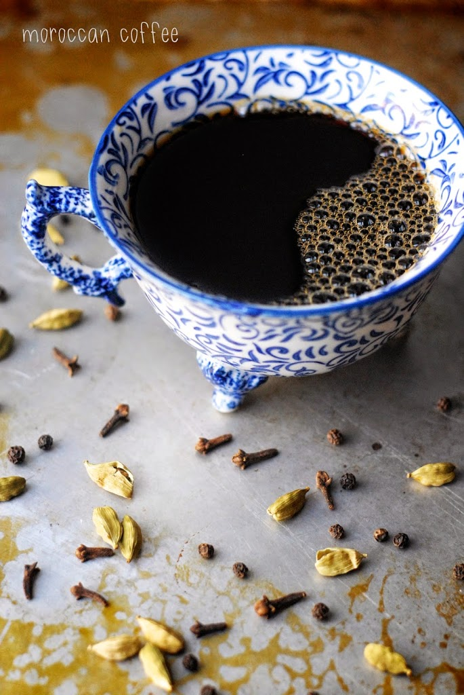

Morroccan Coffee

This one is a bit more complicated, as it requires a little more preparation with the gathering of some not-too-common
spices, like cardamon. The result will not be an ordinary cup o' joe, but a flavorful experience.
Ingredients :
- 32 oz of water (enough for about 4 cups)
- 1/2 cup of dark roasted coffee grounds (about 1/8 cup per serving)
- 1/4 teaspoon of ground cinnamon
- 1/4 teaspoon ground black peppercorns
- 1/4 teaspoon ground nutmeg
- 1/4 teaspoon ginger
- 1/8 teaspoon ground cardamom pods
- 1/8 teaspoon ground clove
- Milk (optional)
- Sugar (also optional)
- Start by preparing your coffee as normal
- Add the pre-ground spices to the coffee grounds. Brew the coffee as usual
- If you are adding milk, pour enough into a saucepan for the desired number of cups, about 1/8 to 1/4 for each cup.
Heat the milk until hot, but not boiling.
If no milk, skip this step
- When the coffee is ready, pour into cups and add the hot milk and sugar to taste. For a truly authentic flavor,
try it with a little bit of milk but no sugar, to enjoy the natural mix of flavors present
Home